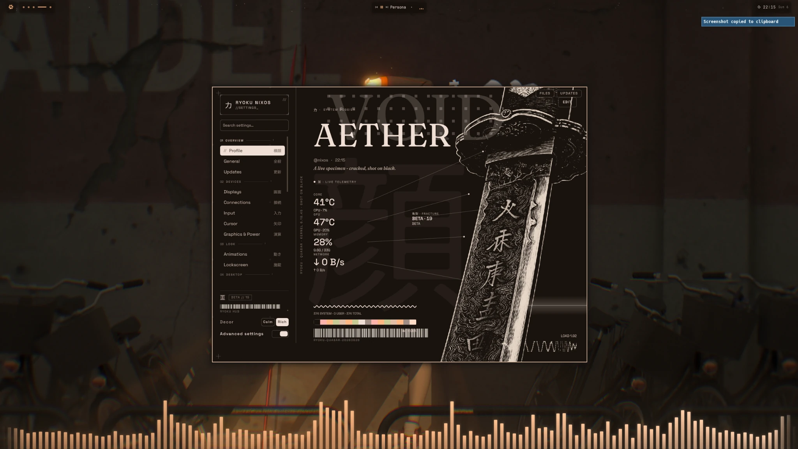
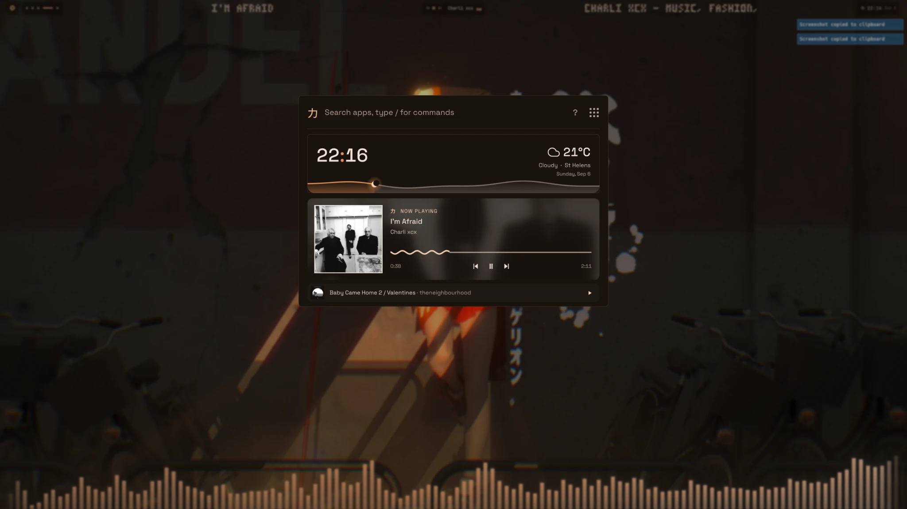
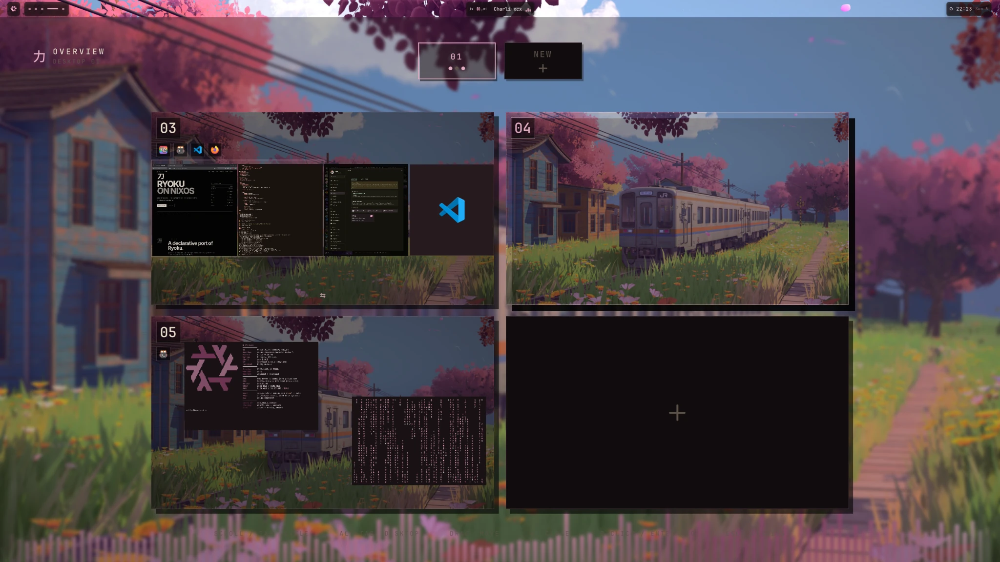
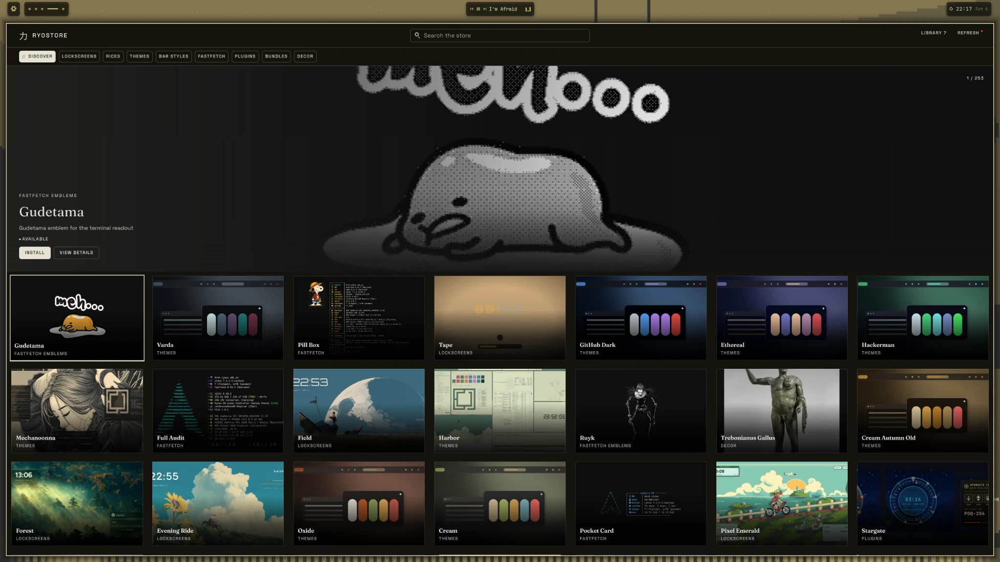
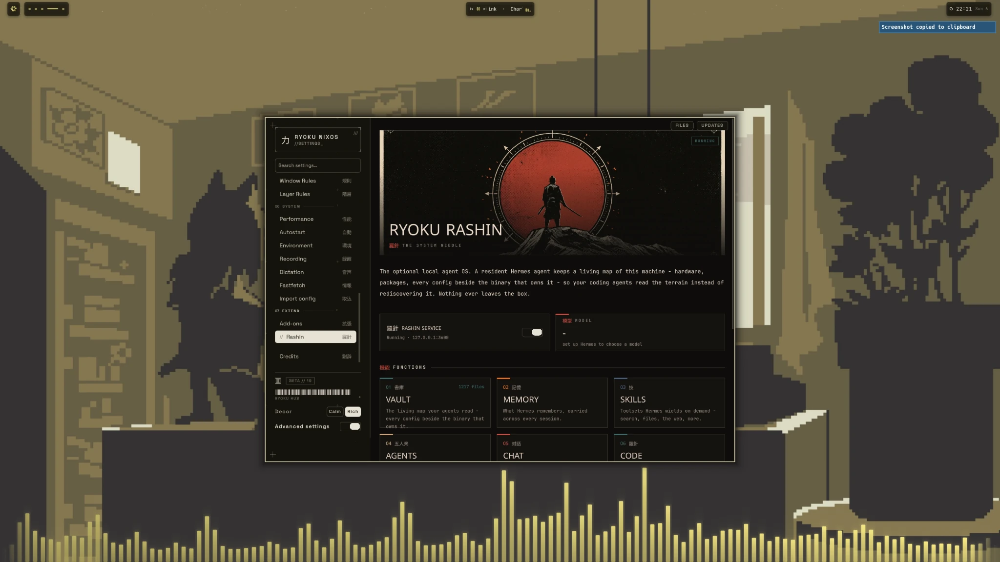

01Enable flakes
Add this inside /etc/nixos/configuration.nix.
nix.settings.experimental-features = [
"nix-command"
"flakes"
];sudo nixos-rebuild switchFor the sake of power and beauty.
The Ryoku desktop, rebuilt as a declarative NixOS system.
Ryoku on NixOS keeps the shell, motion, theming and desktop language intact, while the system underneath becomes reproducible, generational and declarative.

Hyprland, Ryoku Shell, Hub, launcher, theming, lockscreen and the desktop interaction model stay cohesive. Nix changes the implementation — not the identity.
Not a theme pack. Not a screenshot collection. One visual system across launcher, overview, settings, media, store and extensions.


RyoStore turns Ryoku customization into a browsable surface — themes, lock screens, Fastfetch designs, plugins and visual extras without scattering manual files across the system.

Rashin gives the shell a local system-aware layer designed to understand the machine it lives on. It belongs beside the rest of Ryoku rather than floating in a disconnected browser tab.

Fresh NixOS is enough. Ryoku installs on top of your existing system and leaves your bootloader, disks, kernel and graphics configuration under your control.
Add this inside /etc/nixos/configuration.nix.
nix.settings.experimental-features = [
"nix-command"
"flakes"
];sudo nixos-rebuild switchCreate /etc/nixos/flake.nix, then rebuild from it.
sudo nixos-rebuild switch --flake /etc/nixos#nixosPreview the installer first if you want to see exactly what changes.
nix run github:aethctl/Ryoku-on-NixOS/main#install -- --dry-runThen install:
nix run github:aethctl/Ryoku-on-NixOS/main#installThe installer builds before switching and stores affected configuration backups under /var/backups/ryoku-nixos/.
Add this to /etc/nixos/configuration.nix:
nix.settings.experimental-features = [
"nix-command"
"flakes"
];Then run sudo nixos-rebuild switch.
{
description = "My NixOS system";
inputs.nixpkgs.url = "github:NixOS/nixpkgs/nixos-26.05";
outputs = { nixpkgs, ... }: {
nixosConfigurations.nixos = nixpkgs.lib.nixosSystem {
system = "x86_64-linux";
modules = [ ./configuration.nix ];
};
};
}Rebuild with sudo nixos-rebuild switch --flake /etc/nixos#nixos.
ryoku updateThat's it. Ryoku advances its configured flake input, builds a new NixOS generation and switches to it.
No. Ryoku integrates into your existing NixOS configuration. Your bootloader, kernel, disks and hardware-specific graphics setup remain owned by your host configuration.
Ryoku updates create normal NixOS generations, so previous generations remain available through standard NixOS rollback and boot-menu mechanisms.
Ryoku develops quickly. NixOS sometimes needs different packaging and integration than Arch, so releases can land slightly later while the Nix-specific work is tested.
RYOKU // NIXOS